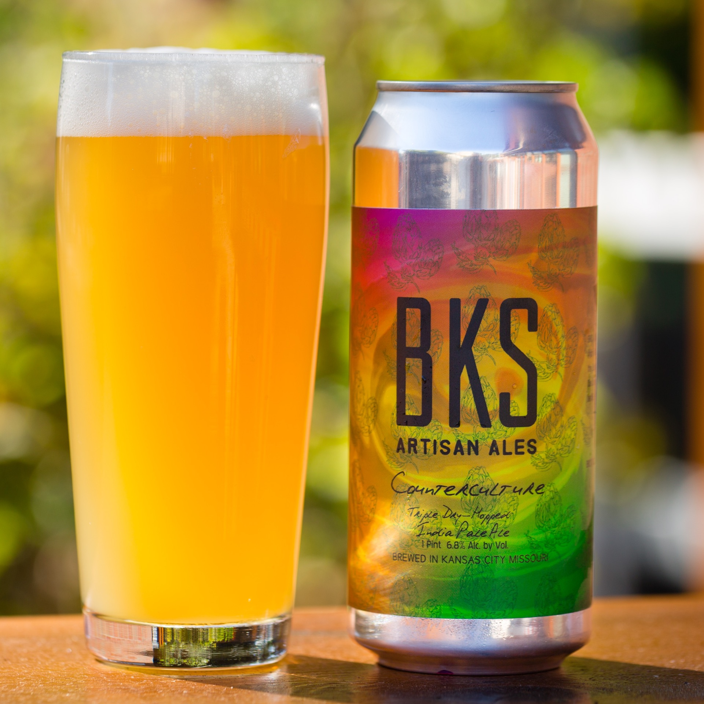

HOME
IPAs
Counterculture IPA
BKS Artisan Ales
Our Northeast style IPA brewed with pale malts, wheat, oats and an ever changing cast of hops. A soft mouthfeel, smooth bitterness, and a hazy-golden profile give way to aromatic and flavorful hops.
Located in Kansas City, BKS Artisan Ales draws on traditional and experimental styles to produce hop-forward, barrel aged, sour and farmhouse ales. In addition to draft pours at the tasting room, canned and bottled beers are available, to-go, from the tasting room on a frequent basis.
Check out their site HERE 